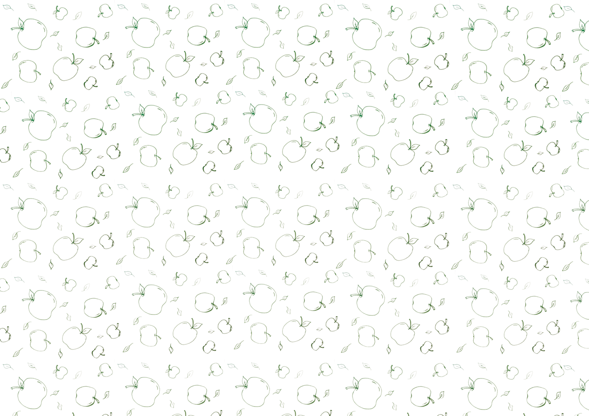
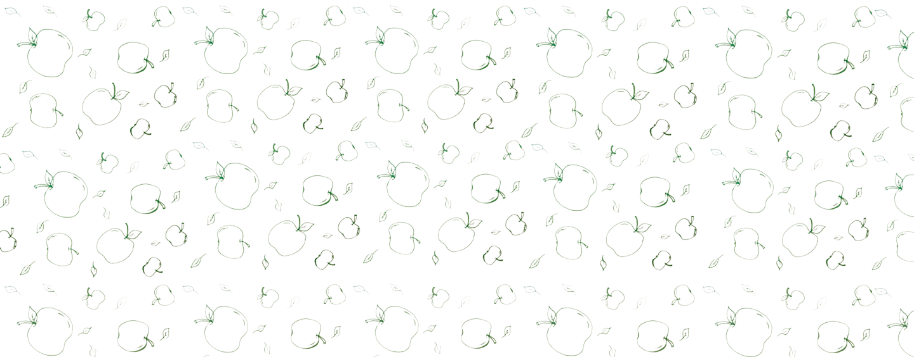
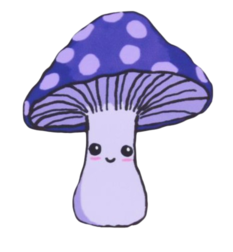

PÅ ÆBLEPLUK I EFTERÅRSSOLEN
Så blev det endelig æblesæson
i Aarhus!
Med et ønske om ikke at lade
nogle af årets sidste sol-
stråler gå til spilde hev jeg
straks et par venner under armen
og lokkede dem med på æblepluk.
De var lidt tilbageholdende
til at starte med, men med lidt
overbevisning og et løfte om
friskbagt æblekage, når vi kom
hjem, var de straks med på den!
Med vores net i kurven cyklede
vi afsted ud mod Præstehaven
i Hasle, hvor jeg havde hørt
rygter om smukke æbletræer.
Da vi ankom, blev vi dog modtaget
af enhver sankers mareridt;
Træerne stod barre. Vi havde
desværre været for sent på den.
Enten var vi lidt for sent på
sæsonen eller så havde en anden
sanker haft en lidt for god høst.
Vi lod dog ikke dette ødelægge
vores mod og drog derefter videre
mod æblelunden i Ryparken. Vi
parkerede vores cykler og tog et
kig omkring. Ingen af os havde
været der før, og vi havde derfor
lidt svært ved at finde de berygtede
æbletræer.Efter en god gåtur,
hvor vi bl.a. faldt over en hel del
svampe (ikke den spiselige slags,
desværre), fandt vi dem endelig.
Der stod de. De fineste æbletræer
med en masse grønne æbler hændende
på sig. Vi fandt straks vores net
frem og begyndte at samle.
Mens vi var der, kom der også andre
forbi for at plukke, og vi delte
et dejligt øjeblik vel vidende at
vi alle nok skulle få en god høst.
Med vores fangst sikkert i vores
nu tunge net tog vi hjem igen, hvor
den nu stod på kagebagning.
Godt vindblæste og glade for at have
kommet i mål med dagens gøremål nød
vi den lækre kage til et afsnit af
Den Store Bagedyst. Man skal jo helst
have noget til ganen, når man ser det.

Efter at have nydt hele hærligheden gik det op for os, at vi havde haft
en lidt for god høst til kun at skulle bruge på kage, og vi valgte derfor
at lave en stor omgang æblemarmelade, der blev hældt på glas og givet ud
til venner og familie.
Alt i alt endte vores lille dag af sankning med at være utrolig hyggelig
og en kæmpe succes!
